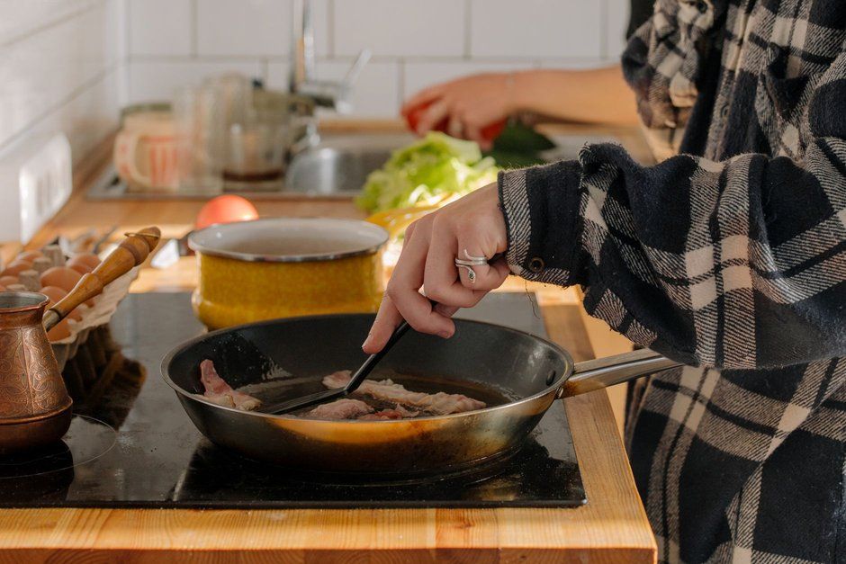

Optimizing Your Food Budget While Studying: Kitchen Hacks You Need

Photo: cottonbro studio / Pexels
Food is one of the easiest places to save. These simple habits help you spend less without eating less well.
1. Plan your meals
Take ten minutes a week to choose meals, check your pantry and write a list. You will buy fewer impulse items and waste less.
2. Compare unit prices
Look at the price per kilogram or per liter on the shelf label. Large sizes only pay off if you use them before they spoil.
3. Favor seasonal and frozen produce
Seasonal fruit and vegetables are often cheaper. Frozen produce keeps a long time and cuts waste.
4. Rely on legumes and grains
Lentils, chickpeas, beans, rice and oats provide a lot of food for little money. Replacing part of the meat with legumes lowers the bill.
5. Prepare ahead
Cook extra portions and freeze them. This helps you avoid costly takeout when you are short on time.
6. Understand package dates
"Best before" refers to quality, not safety, so food can often be eaten a little after that date. However, never eat food that is moldy, smells off or looks suspicious. Throw out cooked leftovers kept longer than two to three days.
7. Cook basic things yourself
Making your own sauces, soup or dressings costs less than prepared products. A pan, a pot and a good knife are enough.
8. Use deals without being tricked
Discounts help on items you already buy. Store coupons and apps can save money, but do not buy something just because it is on sale.
These habits help you eat better while keeping your budget under control.
Recommended products
As an Amazon Associate, I earn from qualifying purchases.